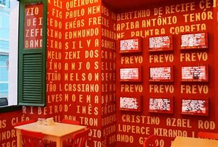
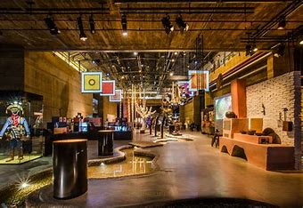

Paço do Frevo
O Paço do Frevo é um espaço cultural localizado no Recife Antigo dedicado à preservação e difusão do frevo, um dos principais símbolos culturais de Pernambuco.
No Paço do Frevo, os visitantes podem conhecer mais sobre a história, os ritmos, as danças e as tradições do frevo através de exposições, shows, oficinas e atividades interativas.
Cais do Sertão
O Cais do Sertão é um museu dedicado à cultura do sertão nordestino, localizado no Recife Antigo, próximo ao Marco Zero.
No Cais do Sertão, os visitantes podem explorar exposições interativas que abordam diversos aspectos da cultura, história, música, arte e literatura do sertão.
